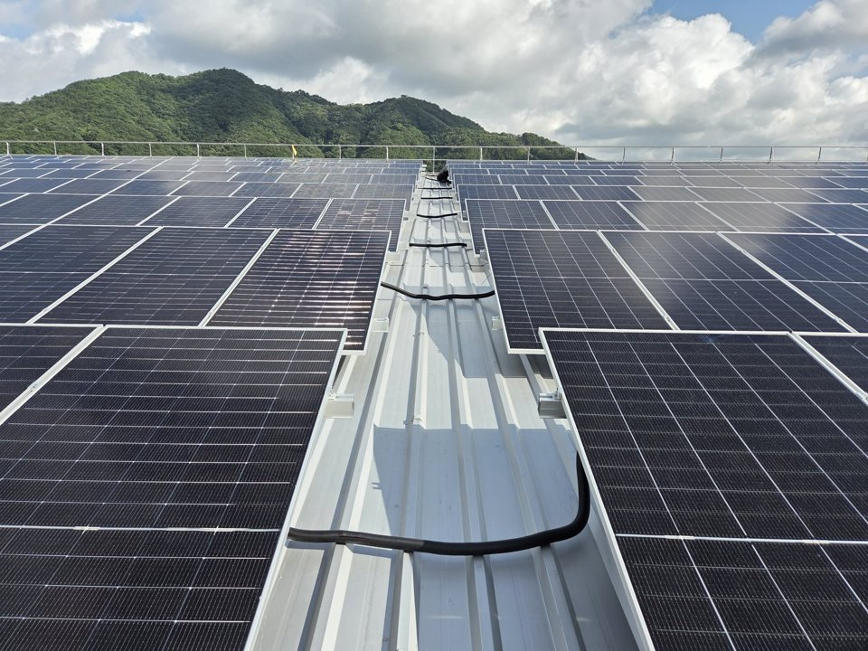
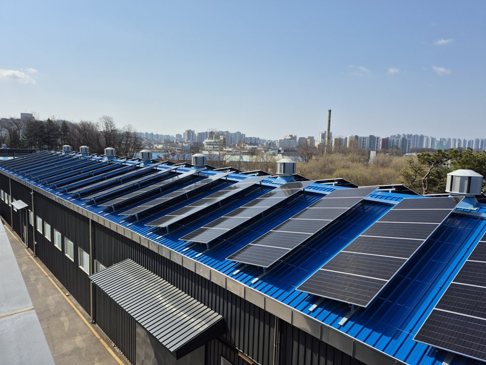
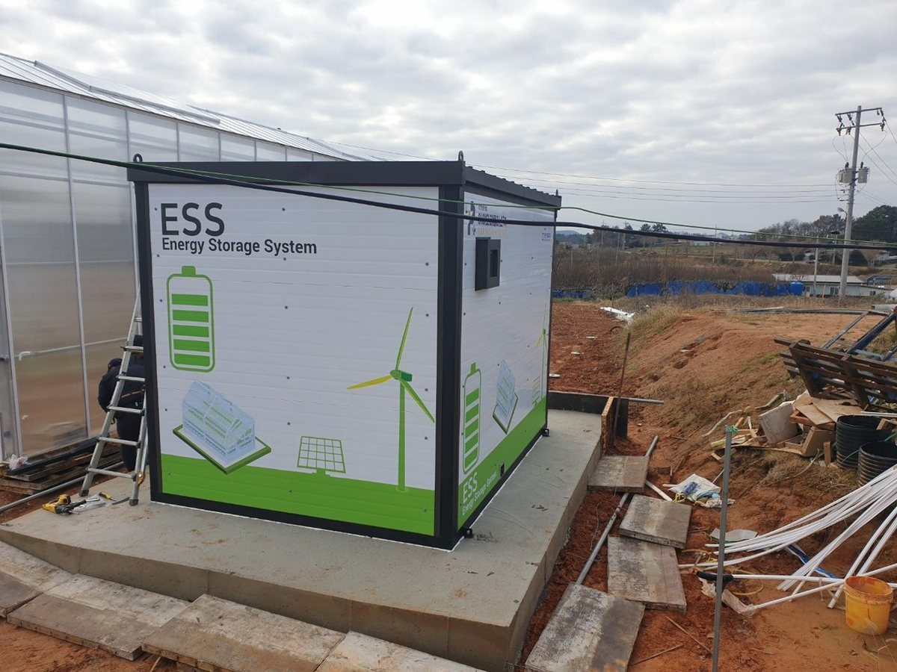

공장·
A 제조공장 지붕 태양광
1.35 MW
- 지역
- 경남 창원
- 한 일
- 설계·
인허가· 시공 - 연도
- 2026
모듈 2,108장, 인버터 14대. 지붕 강판 보강과 안전시설까지 맡아 7월 사용전검사를 한 번에 통과하고 상업운전을 시작했습니다. 사례 자세히 보기 →
고객 이름과 금액은 싣지 않습니다. 유형, 지역, 용량, 맡은 일만 적습니다.
8건이 쪽에 공개한 사례
6개 시·
1.35 MW가장 큰 준공 현장(창원)
토지 사례는 정리해서 공개할 예정입니다. 비슷한 조건의 검토가 필요하시면 문의해 주세요.
주차장 사례는 정리해서 공개할 예정입니다. 비슷한 조건의 검토가 필요하시면 문의해 주세요.

공장·
1.35 MW
모듈 2,108장, 인버터 14대. 지붕 강판 보강과 안전시설까지 맡아 7월 사용전검사를 한 번에 통과하고 상업운전을 시작했습니다. 사례 자세히 보기 →

공장·
558 kWp
준공 30년이 지난 지붕이라 공작물 축조신고와 대수선 인허가를 함께 진행했습니다. 2026년 3월 상업운전. 사례 자세히 보기 →
공장·
300.16 kWp
인버터 4대로 나눈 지붕 발전소 4곳을 알루미늄 구조물로 시공했습니다.
공장·
129.28 kWp
한전 출력제어 기준을 보고 90 kW 이하 두 발전소로 나눴습니다.
공장·
29.2 kWp
경관지구라 패널이 보이는 범위를 시와 협의했고, 한전 여유용량 30 kW 안에서 판매용으로 맞췄습니다.
ESS
UPS 1,200 kVA
정보통신실 UPS 배터리를 옥외 컨테이너형 배터리실로 옮겼습니다. 소화설비와 급속배기, 기초 패드와 울타리까지 맡았습니다.
설계·
온실 전기
보고서, 도면, 계산서, 내역서를 냈고 관리동 지붕 태양광도 검토했습니다. 변압기 여유가 적어 부하를 1단계와 2단계로 나눴습니다.
ESS · 설계·
ESS 약 630 kWh
준공 실적이 아니라 고지서와 15분 데이터로 계산한 설계 검토입니다. 지붕 태양광 약 550 kWp와 함께 아침 피크를 낮추는 안입니다.
회사 이름은 'A 제조공장'처럼 적었습니다. 설계 검토 사례는 준공 실적이 아니라 계산 결과입니다.
본사는 전남 나주입니다. 전국 현장을 맡습니다.
| 분야 | 시설 예 |
|---|---|
| 건축전기 | 소방서 별관, 문화공연장, 소규모 체육관, 어린이집 리모델링, 대학 라운지 |
| 소방· | 소방서 별관 소방전기· |
| 공공 기반시설 | 공공하수처리시설 증설, 도로정비 전기설계, 도로개설 전기공사, 지하공동구 광케이블 |
| 수배전· | 학교 수배전반 교체 감리, 보호계전기 정정, 배터리실 이설 설계 |
| 신재생에너지 | 태양광· |
에코케이코리아 설립 전 대표와 기술진이 수행한 일입니다.
검증 기록 판정, 구조 계산, 보호계전기 정정, 용량계산서, 발전량 계산을 어떻게 검증하는지 숫자로 공개합니다.
검증 기록 보기



작업 범위와 일정을 먼저 알려 드립니다.